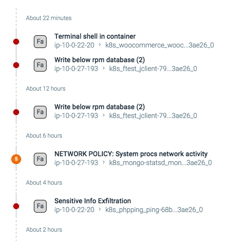

Policy Events
The Policy Events module displays a complete list of all events that have occurred within the infrastructure during a defined timeline. The module provides users with an overview of the entire infrastructure, as well as the functionality to deep dive into specific components, identify false positives, and configure policies to optimize performance.
Navigate the Policy Events Module
List View
The list view provides a comprehensive list of all events within the grouping/timeline, in chronological order:
 |
Note
If multiple events occur at the same time, the dot will contain the number of events:
|  |
This view presents events in reverse chronological order, with the most recent event listed at the top. The following information is displayed:
Name | Description |
|---|---|
Severity | The severity of the event based on the policies triggered.
NoteIf using the Sysdig API to work with policy events, note the numeric value of the severity levels: Low = 1 Medium = 2 High = 3 |
Rule Type | The type of rule violated by the event. Each rule type is represented by a periodic table style identifier:
|
Policy List | The policy or policies triggered by the event/s. Each policy is listed in bold text. |
Entity | The entity the event originated from. The entities will reflect the current NoteIf multiple entities are impacted, a notation will appear stating |
Action(s) taken | The action(s) taken in response to the event. Each action is represented by an icon:
|
Event Details
Selecting an event opens the Policy Event Details panel, which displays a detailed summary of the event, the location it occurred, and the policies that were violated:
 |
The following information is displayed:
Name | Description |
|---|---|
When | The date and time the event(s) occurred. |
Related Resources | Additional information about the event, including:
|
Severity | The severity of the event(s) based on the policies triggered.
NoteIf using the Sysdig API to work with policy events, note the numeric value of the severity levels: Low = 1 Medium = 2 High = 3 |
Triggered Policy | The policies that triggered the event(s). The link opens the NoteAdd/remove filter links next to each policy will add/remove that policy to the search bar. |
Triggered Rule Type | The type of rule violated by the event. Each rule type is represented by a periodic table style identifier:
|
Scope | The scope of the event within the infrastructure. NoteThe entities listed, and the order they appear, will vary based on the grouping selected in the |
Host | The hostname and MAC address of the host where the event occurred. |
Container | The ID, name, and image of the container where the event occurred. |
Actions | The action(s) taken in response to the event(s). Each action is represented by an icon:
|
Summary | Detailed information regarding the event. |
Topology View
The topology view provides an overview of all events, broken down visually to show their network dependencies across the various hosts, containers, and services, based on the configured grouping/timeline:
Note
For more information on configuring groupings and time intervals, refer to the Filter Policy Events section.
 |
Each node can be drilled-down into, to find the exact events requiring review, by zooming in, and selecting the Expand (plus) icon in the top left corner of the node:
 |
Filter Policy Events
Groupings
Groupings are hierarchical organizations of labels, allowing users to organize their infrastructure views in a logical hierarchy. Users can switch between pre-configured groupings via the Browse By menu, or configure custom groupings, and then dive deeper into the infrastructure. For more information about groupings, refer to the Configure Groupings in Sysdig Secure documentation
Search Filters
Search filters can be applied by using the search bar. The event numbers alongside the groupings in the Browse By menu will be updated to reflect the number of events that meet the search criteria. The search bar example below displays only Write below rpm database events:
 |
Note
The topology view is not impacted by the search function.